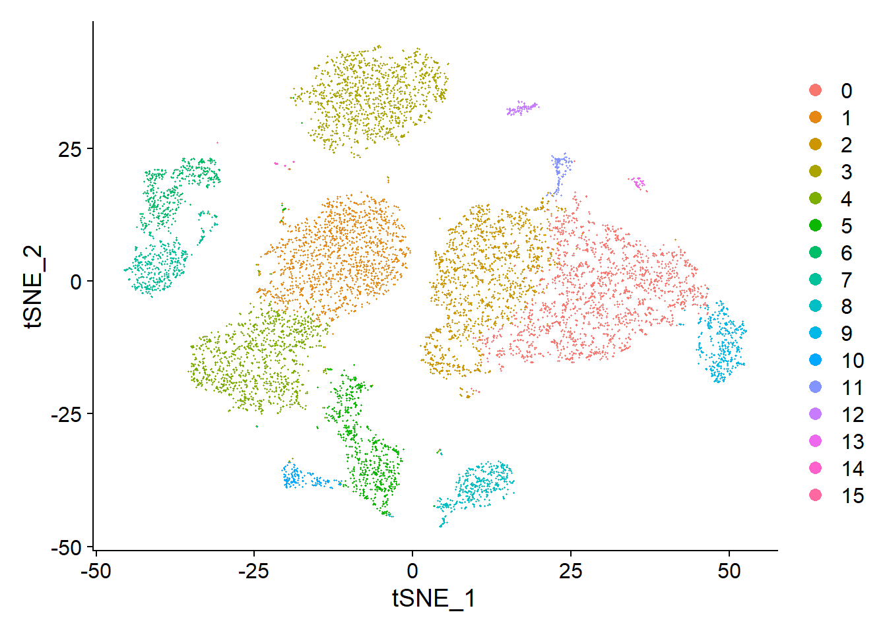
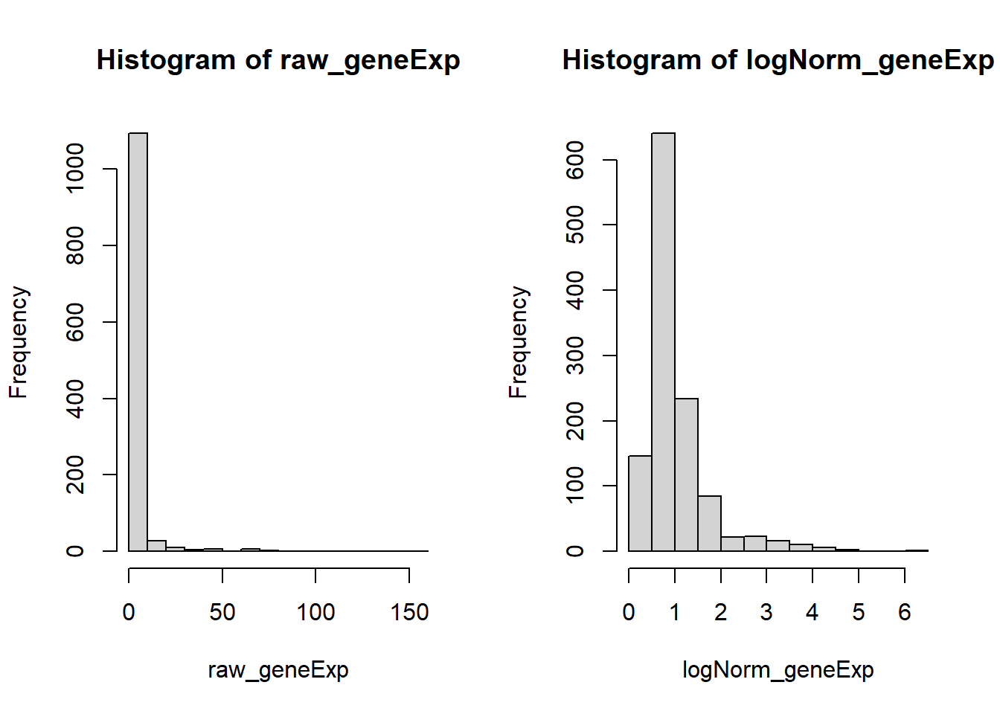
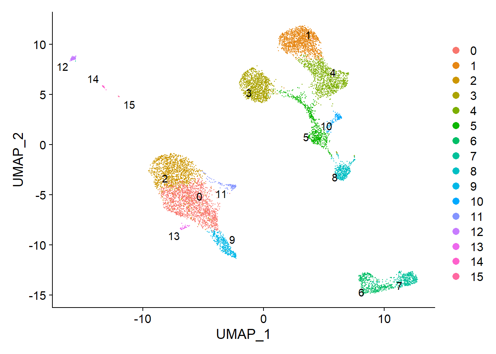

Chapter 3 Analysis Using Seurat
The contents in this chapter are adapted from Seurat - Guided Clustering Tutorial with little modification. The data we used is a 10k PBMC data getting from 10x Genomics website.
In this tutorial, we will learn how to Read 10X sequencing data and change it into a seurat object, QC and selecting cells for further analysis, Normalizing the data, Identification of highly variable features (feature selection), Scaling the data, Perform linear dimensional reduction and Visualization.
3.1 Seurat object
The Seurat object serves as a container that contains both data (like the count matrix) and analysis (like PCA, or clustering results) for a single-cell dataset. Before using Seurat to analyze scRNA-seq data, we can first have some basic understanding about the Seurat object from here.
3.2 Setup the Seurat object
We start by reading in the data. The Read10X_h5 reads count matrix from 10X CellRanger hdf5 file, returning a unique molecular identified (UMI) count matrix. The values in this matrix represent the number of molecules for each feature (i.e. gene; row) that are detected in each cell (column). It can be used to read both scATAC-seq and scRNA-seq matrices.
We next use the count matrix to create a Seurat object.
# Load the PBMC dataset
pbmc.data <- Read10X_h5("./data/10k_PBMC.h5")
# Initialize the Seurat object with the raw (non-normalized data).
pbmc <- CreateSeuratObject(counts = pbmc.data, project = "pbmc10k", min.cells = 3, min.features = 200)
pbmc## An object of class Seurat
## 22432 features across 10813 samples within 1 assay
## Active assay: RNA (22432 features, 0 variable features)If we want to read data using the output of the cellranger pipeline from 10X directly, we can use Read10X().
3.3 Standard pre-processing workflow
The steps below encompass the standard pre-processing workflow for scRNA-seq data in Seurat. They are based on the RNA reads count matrix we will get from Cell Ranger or STARsolo output. The standard pre-processing workflow represents the selection and filtration of cells based on QC metrics, data normalization and scaling, and the detection of highly variable features.
3.3.1 QC and selecting cells for further analysis
Seurat allows you to easily explore QC metrics and filter cells based on any user-defined criteria. A few QC metrics commonly used (Ilicic et al. 2016) by the community include
- The number of unique genes detected in each cell.
- low-quality cells or empty droplets will often have very few genes
- cell doublets or multiplets may exhibit an aberrantly high gene count
- similarly, the total number of molecules detected within a cell (correlates strongly with unique genes)
- The percentage of reads that map to the mitochondrial genome
- low-quality / dying cells often exhibit extensive mitochondrial contamination
- we calculate mitochondrial QC metrics with the
PercentageFeatureSet()function, which calculates the percentage of counts originating from a set of features - we use the set of all genes starting with MT- as a set of mitochondrial genes
# The [[ operator can add columns to object metadata. This is a great place to stash QC stats
pbmc[["percent.mt"]] <- PercentageFeatureSet(pbmc, pattern = "^MT-")The number of unique genes and total molecules are automatically calculated during CreateSeuratObject(). They are stored in the object meta data.
## orig.ident nCount_RNA nFeature_RNA percent.mt
## AAACCCAGTATATGGA-1 pbmc10k 860 350 44.1860465
## AAACCCAGTATCGTAC-1 pbmc10k 1548 729 0.4521964
## AAACCCAGTCGGTGAA-1 pbmc10k 6387 1827 10.4117739
## AAACCCAGTTAGAAAC-1 pbmc10k 16664 3744 5.2808449
## AAACCCAGTTATCTTC-1 pbmc10k 3352 1464 13.8424821We can visualize the nFeature_RNA, nCount_RNA and percent.mt we used as QC metrics.
* Just like Cell Ranger output, feature in the following results represents gene. nFeature_RNA is the number of genes detected in each cell. nCount_RNA is the total number of molecules detected within a cell. And each dot in the following plots represents a cell.
# Visualize QC metrics as a violin plot
VlnPlot(pbmc, features = c("nFeature_RNA", "nCount_RNA", "percent.mt"), ncol = 3, pt.size = 0.0001)We can then using dot plots to show the relationship between nCount_RNA, nFeature_RNA and percent.mt.
* The number -0.35 and 0.94 above each plot denotes the correlations between x-axis and y-axis.
# FeatureScatter is typically used to visualize feature-feature relationships, but can be used
# for anything calculated by the object, i.e. columns in object metadata, PC scores etc.
plot1 <- FeatureScatter(pbmc, feature1 = "nCount_RNA", feature2 = "percent.mt") +
theme(legend.position="none")
plot2 <- FeatureScatter(pbmc, feature1 = "nCount_RNA", feature2 = "nFeature_RNA") +
theme(legend.position="none")
plot1 + plot2
Here, we filter away cells that have unique feature counts(genes) over 5,000 or less than 200. We also filter away cells that have > 15% mitochondrial counts
We can visualize QC metrics again after filtering cells
plot1 <- FeatureScatter(pbmc, feature1 = "nCount_RNA", feature2 = "percent.mt") +
theme(legend.position="none")
plot2 <- FeatureScatter(pbmc, feature1 = "nCount_RNA", feature2 = "nFeature_RNA") +
theme(legend.position="none")
plot1 + plot2* Depend on the data we analyze, we can use different cutoff for nFeature_RNA and percent.mt. For example, we can filter away cells that have unique feature counts(genes) over 5,000 or less than 300, or cells that have > 10% mitochondrial counts, and see how QC metrics looks like.
temp <- subset(pbmc, subset = nFeature_RNA > 300 & nFeature_RNA < 5000 & percent.mt < 10)
VlnPlot(temp, features = c("nFeature_RNA", "nCount_RNA", "percent.mt"), ncol = 3, pt.size = 0.001)
3.3.2 Normalizing the data
After removing unwanted cells from the dataset, the next step is to normalize the data. By default, we employ a global-scaling normalization method “LogNormalize” that normalizes the feature expression measurements for each cell by the total expression, multiplies this by a scale factor (10,000 by default), and log-transforms the result. Normalized values are stored in pbmc[["RNA"]]@data.
pbmc <- NormalizeData(pbmc, normalization.method = "LogNormalize", scale.factor = 10000, verbose = FALSE)Here we sample 10,000 reads counts from the large gene expression matrix to visualize the gene expression distribution before and after normalization separately (zeros are not included).
# set seed and put two plots in one figure
set.seed(123)
par(mfrow=c(1,2))
# original expression distribution
raw_geneExp = as.vector(pbmc[['RNA']]@counts) %>% sample(10000)
raw_geneExp = raw_geneExp[raw_geneExp != 0]
hist(raw_geneExp)
# expression distribution after normalization
logNorm_geneExp = as.vector(pbmc[['RNA']]@data) %>% sample(10000)
logNorm_geneExp = logNorm_geneExp[logNorm_geneExp != 0]
hist(logNorm_geneExp)
In this previous line of code (and in future commands), Seurat provides the default values for certain parameters in the function call. However, this isn’t required and the same behavior can be achieved with:
3.3.3 Identification of highly variable features (feature selection)
We next calculate a subset of features that exhibit high cell-to-cell variation in the dataset (i.e, they are highly expressed in some cells, and lowly expressed in others). It is shown that (Brennecke et al. 2013) focusing on these genes in downstream analysis helps to highlight biological signal in single-cell datasets.
The procedure in Seurat is described in detail here (Stuart et al. 2019), and improves on previous versions by directly modeling the mean-variance relationship inherent in single-cell data, and is implemented in the FindVariableFeatures() function. By default, Seurat returns 2,000 features per dataset and these will be used in downstream analysis, like PCA.
pbmc <- FindVariableFeatures(pbmc, selection.method = "vst", nfeatures = 2000, verbose = FALSE)
# Identify the 10 most highly variable genes
top10 <- head(VariableFeatures(pbmc), 10)
# plot variable features with and without labels
plot1 <- VariableFeaturePlot(pbmc) +
theme(legend.position="top")
plot2 <- LabelPoints(plot = plot1, points = top10, repel = TRUE) +
theme(legend.position="none")
plot1 + plot23.3.4 Scaling the data
Next, we apply a linear transformation (‘scaling’) that is a standard pre-processing step prior to dimensional reduction techniques like PCA. The ScaleData() function:
- shifts the expression of each gene, so that the mean expression across cells is 0
- scales the expression of each gene, so that the variance across cells is 1
- this step gives equal weight in downstream analyses, so that highly-expressed genes do not dominate
- the results of this are stored in
pbmc[["RNA"]]@scale.data
When using the above command, we use all genes to scale data. Scaling is an essential step in the Seurat workflow, but only on genes that will be used as input to PCA. Therefore, the default in ScaleData() is only to perform scaling on the previously identified variable features (2,000 by default). And it will make this step faster.
In this case, our PCA and clustering results will be unaffected. However, Seurat heatmaps (produced as shown below with DoHeatmap()) require genes in the heatmap to be scaled, to make sure highly-expressed genes don’t dominate the heatmap. To make sure we don’t leave any genes out of the heatmap later, we are scaling all genes in this tutorial.
If we want to scale on the previously identified 2000 variable features, we can simply omit the features argument in the previous function call, i.e.
The ScaleData() function also allow us to remove unwanted sources of variation from a single-cell dataset. For example, we could ‘regress out’ heterogeneity associated with (for example) cell cycle stage, or mitochondrial contamination. This feature can be achieved by specifying vars.to.regress, i.e.:
However, particularly for advanced users who would like to use this functionality, it is recommended by Seurat using their new normalization workflow, SCTransform(). The method is described in Seurat paper (Hafemeister and Satija 2019), with a separate vignette using Seurat v3 here. As with ScaleData(), the function SCTransform() also includes a vars.to.regress parameter.
3.4 Perform linear dimensional reduction
Next we perform PCA on the scaled data. By default, only the previously determined variable features are used as input, but can be defined using features argument if you wish to choose a different subset.
Seurat provides several useful ways of visualizing both cells and features that define the PCA, including VizDimLoadings(), DimPlot(), and DimHeatmap().
# Examine and visualize PCA results a few different ways
print(pbmc[["pca"]], dims = 1:5, nfeatures = 5)## PC_ 1
## Positive: LTB, IL32, TRAC, CD3D, TRBC2
## Negative: FCN1, FGL2, CST3, IFI30, TYMP
## PC_ 2
## Positive: MS4A1, CD79A, BANK1, IGHM, NIBAN3
## Negative: IL32, GZMM, CD3D, CD7, CD247
## PC_ 3
## Positive: GZMB, CLIC3, NKG7, GNLY, KLRD1
## Negative: CCR7, LEF1, TRABD2A, TCF7, LTB
## PC_ 4
## Positive: CD79B, MS4A1, GNLY, CD79A, LINC00926
## Negative: LILRA4, CLEC4C, SERPINF1, TPM2, SCT
## PC_ 5
## Positive: CDKN1C, HES4, CTSL, TCF7L2, BATF3
## Negative: S100A12, ITGAM, VCAN, CES1, MGST1In particular DimHeatmap() allows for easy exploration of the primary sources of heterogeneity in a dataset, and can be useful when trying to decide which PCs to include for further downstream analyses. Both cells and features are ordered according to their PCA scores. Setting cells to a number plots the ‘extreme’ cells on both ends of the spectrum, which dramatically speeds plotting for large datasets. Though clearly a supervised analysis, we find this to be a valuable tool for exploring correlated feature sets.
To overcome the extensive technical noise in any single feature for scRNA-seq data, Seurat clusters cells based on their PCA scores, with each PC essentially representing a ‘metafeature’ that combines information across a correlated feature set. The top principal components therefore represent a robust compression of the dataset. Here, we choose first 20 PCs.
3.5 Cluster the cells
Seurat v3 applies a graph-based clustering approach, building upon initial strategies in (Macosko et al. 2015). Importantly, the distance metric which drives the clustering analysis (based on previously identified PCs) remains the same. However, approach in Seurat to partitioning the cellular distance matrix into clusters has dramatically improved. This approach was heavily inspired by recent publications which applied graph-based clustering approaches to scRNA-seq data (Xu and Su 2015) and CyTOF data (Levine et al. 2015). Briefly, these methods embed cells in a graph structure - for example a K-nearest neighbor (KNN) graph, with edges drawn between cells with similar feature expression patterns, and then attempt to partition this graph into highly interconnected ‘quasi-cliques’ or ‘communities’.
As in PhenoGraph, they first construct a KNN graph based on the euclidean distance in PCA space, and refine the edge weights between any two cells based on the shared overlap in their local neighborhoods (Jaccard similarity). This step is performed using the FindNeighbors() function, and takes as input the previously defined dimensionality of the dataset (first 20 PCs).
To cluster the cells, we next apply modularity optimization techniques such as the Louvain algorithm (default) or SLM (Blondel et al. 2008), to iteratively group cells together, with the goal of optimizing the standard modularity function. The FindClusters() function implements this procedure, and contains a resolution parameter that sets the ‘granularity’ of the downstream clustering, with increased values leading to a greater number of clusters. We find that setting this parameter between 0.4-1.2 typically returns good results for single-cell datasets of around 3K cells. Optimal resolution often increases for larger datasets. The clusters can be found using the Idents() function.
pbmc <- FindNeighbors(pbmc, dims = 1:20, verbose = FALSE)
pbmc <- FindClusters(pbmc, resolution = 0.5, verbose = FALSE)## AAACCCAGTATCGTAC-1 AAACCCAGTCGGTGAA-1 AAACCCAGTTAGAAAC-1 AAACCCAGTTATCTTC-1
## 2 4 2 8
## AAACCCAGTTGCCGAC-1
## 0
## Levels: 0 1 2 3 4 5 6 7 8 9 10 11 12 13 14 153.6 Run non-linear dimensional reduction (UMAP/tSNE)
Seurat offers several non-linear dimensional reduction techniques, such as tSNE and UMAP, to visualize and explore these datasets. The goal of these algorithms is to learn the underlying manifold of the data in order to place similar cells together in low-dimensional space. Cells within the graph-based clusters determined above should co-localize on these dimension reduction plots. As input to the UMAP and tSNE, we suggest using the same PCs as input to the clustering analysis.
## Warning: The default method for RunUMAP has changed from calling Python UMAP via reticulate to the R-native UWOT using the cosine metric
## To use Python UMAP via reticulate, set umap.method to 'umap-learn' and metric to 'correlation'
## This message will be shown once per sessionThen we can get the UMAP plot of the single cell clustering results.
We can also visualize it using tSNE plot
We can set label = TRUE or use the LabelClusters function to help label individual clusters.

Now it is time to save the object so that it can easily be loaded back in without having to rerun the computationally intensive steps performed above, or easily shared with collaborators.
References
Blondel, Vincent D, Jean-Loup Guillaume, Renaud Lambiotte, and Etienne Lefebvre. 2008. “Fast Unfolding of Communities in Large Networks.” Journal of Statistical Mechanics: Theory and Experiment 2008 (10): P10008.
Brennecke, Philip, Simon Anders, Jong Kyoung Kim, Aleksandra A Kołodziejczyk, Xiuwei Zhang, Valentina Proserpio, Bianka Baying, et al. 2013. “Accounting for Technical Noise in Single-Cell Rna-Seq Experiments.” Nature Methods 10 (11): 1093–5.
Hafemeister, Christoph, and Rahul Satija. 2019. “Normalization and Variance Stabilization of Single-Cell Rna-Seq Data Using Regularized Negative Binomial Regression.” Genome Biology 20 (1): 1–15.
Ilicic, Tomislav, Jong Kyoung Kim, Aleksandra A Kolodziejczyk, Frederik Otzen Bagger, Davis James McCarthy, John C Marioni, and Sarah A Teichmann. 2016. “Classification of Low Quality Cells from Single-Cell Rna-Seq Data.” Genome Biology 17 (1): 1–15.
Levine, Jacob H, Erin F Simonds, Sean C Bendall, Kara L Davis, D Amir El-ad, Michelle D Tadmor, Oren Litvin, et al. 2015. “Data-Driven Phenotypic Dissection of Aml Reveals Progenitor-Like Cells That Correlate with Prognosis.” Cell 162 (1): 184–97.
Macosko, Evan Z, Anindita Basu, Rahul Satija, James Nemesh, Karthik Shekhar, Melissa Goldman, Itay Tirosh, et al. 2015. “Highly Parallel Genome-Wide Expression Profiling of Individual Cells Using Nanoliter Droplets.” Cell 161 (5): 1202–14.
Stuart, Tim, Andrew Butler, Paul Hoffman, Christoph Hafemeister, Efthymia Papalexi, William M Mauck III, Yuhan Hao, Marlon Stoeckius, Peter Smibert, and Rahul Satija. 2019. “Comprehensive Integration of Single-Cell Data.” Cell 177 (7): 1888–1902.
Xu, Chen, and Zhengchang Su. 2015. “Identification of Cell Types from Single-Cell Transcriptomes Using a Novel Clustering Method.” Bioinformatics 31 (12): 1974–80.